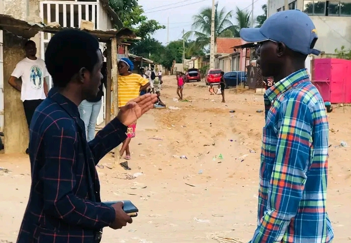
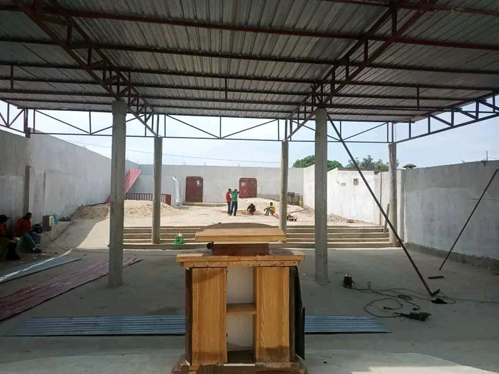
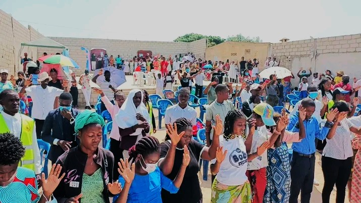

Palavra Viva
Pregamos a Bíblia com clareza, unção e aplicação para a vida real.

Um altar de adoração, discipulado e manifestação da glória de Deus. Agora a página inicial gira por várias imagens do templo para mostrar melhor a identidade da casa.
Anunciar Cristo, cuidar de famílias, formar obreiros e estender o Reino de Deus com palavra, poder, amor e organização.
Organizamos os destaques por áreas para mostrar melhor as actividades, evangelizações e novas frentes que você pediu.

Encontros, ensino, comunhão e fortalecimento espiritual para mulheres da igreja.

Turmas de formação para líderes, obreiros e departamentos da casa.
Tempos de separação, busca, altar e renovação para a igreja.

Equipes a anunciar Jesus com fervor, compaixão e intencionalidade.

A igreja alcança vidas com mensagens públicas de arrependimento e esperança.

Acções em zonas estratégicas com evangelho, oração e acolhimento.

Avanços de construção, manutenção e preparação de espaços.

Crianças crescendo em conhecimento bíblico, adoração e alegria.
Entrega de apoio, assistência e cuidado para famílias e comunidades.
Cada frente do ministério está ligada ao mesmo propósito: glorificar Cristo e formar uma igreja forte, saudável, acolhedora e cheia do Espírito.


As imagens das missões também passam agora em slide automático para dar mais dinamismo ao testemunho visual da obra.

Equipes nas ruas a anunciar Cristo e acolher vidas.

Evangelismo intenso com palavra, convites e intercessão.
O amor de Deus expresso em ajuda concreta e presença comunitária.
"Posso todas as coisas naquele que me fortalece."
Filipenses 4:13